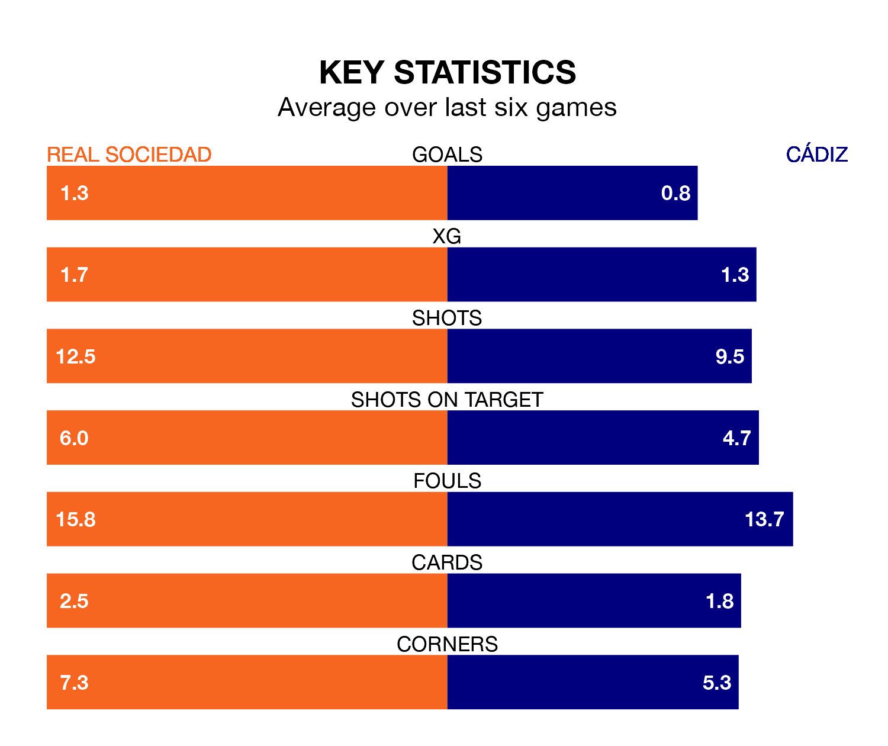

Struggling Cádiz face Real Sociedad away at the Reale Arena on Friday looking to build on a win in their last league outing.
After securing all three points with a 2-0 victory over Atlético Madrid on March 9, Cádiz sit 18th in La Liga.
They travel to play a La Real side sixth in the standings, who also won their last match, 3-2 against Granada CF.
With Álex Remiro between the sticks, La Real can rely on one of the league's safest pair of hands. He has kept 10 clean sheets in his 27 appearances this season, and only one other 'keeper – Athletic Club Bilbao's Unai Simón – has been able to prevent the opposition scoring on more occasions in La Liga.
In Cádiz's net, Jeremías Ledesma has five clean sheets in 25 games. He has conceded a goal every 75 minutes, 40% more often than the 108 minutes between goals for Remiro Gargallo.
In the last 10 years, La Real and Cádiz have played each other on seven occasions. La Real won five of them and they drew twice.
On average, la Real scored 1.6 goals and Cádiz 0.1 in those matches.
Their last meeting was on December 21, when they played out a 0-0 draw.
With 20 goals in 28 games so far this season, the away team are the league's lowest scorers with 0.7 goals per game. And they are conceding more than average, letting in 38 goals at a rate of 1.4 per game.
La Real, meanwhile, are above average scorers, with 1.4 goals per game, compared to a league average of 1.3. They have conceded 1.1 goals per game.
The hosts are in mixed form in La Liga, with two wins and a draw from their last six games.
With a win and three draws over that period, Cádiz's form is slightly worse – they have taken six points from 18, compared to La Real's seven.
Friday's match will be refereed by César Soto Grado, who has taken charge of 16 La Liga games so far this season, issuing four red cards and booking 91 players. He has awarded four penalties.
The last La Real game Soto Grado refereed was a 2-1 away loss to Real Madrid on September 17. His last Cádiz match was their 2-2 draw at home against Sevilla on October 28.
Updated: 15:10 (UTC), 15/03/24